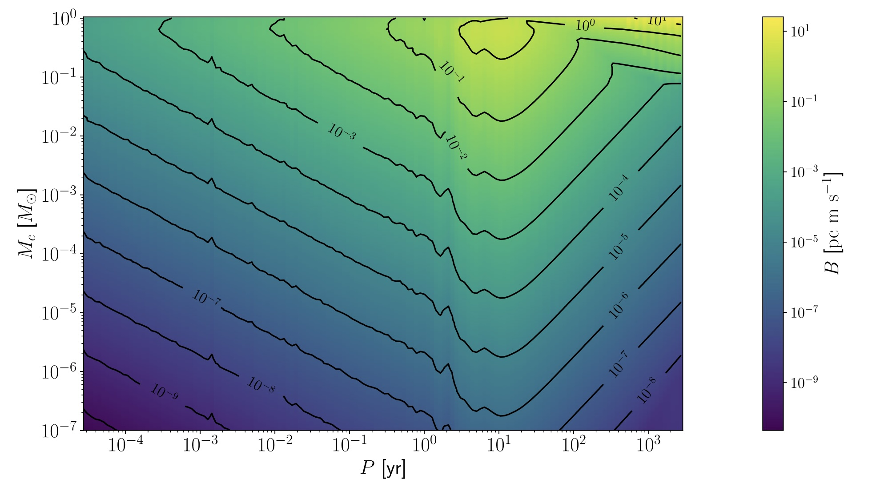
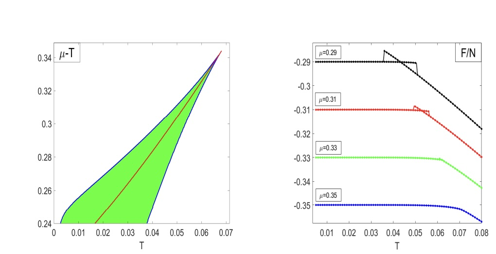
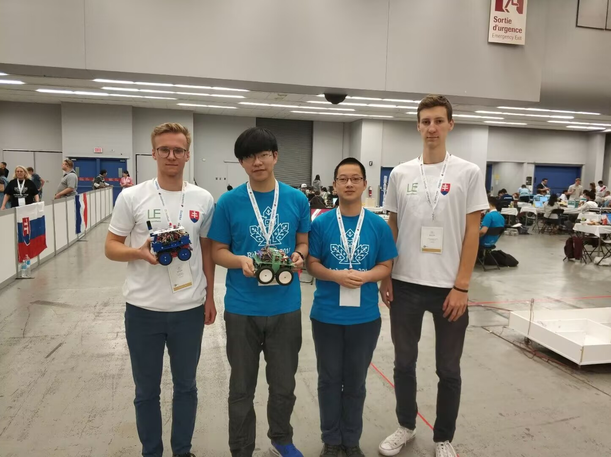

Research Projects

Tianyu Project (Full-stack Developer)
Jun 2023 - Present
Working on a 1-meter optical survey telescope in Lenghu.
- Developed DeepAP: A deep learning framework for aperture photometry (~59,000× speed-up).
- Built a distributed data pipeline (MySQL + RabbitMQ) for ~20TB/year data.
- Created LenghuSky-8: An 8-year all-sky camera dataset.

Mitigating Astrometric Bias
Dec 2021 - Jun 2023
Focused on high-precision barycentric correction for radial-velocity time series.
- Developed a gradient-based method to correct biases in stellar astrometric parameters using PEXO.
- Critical for Earth-twin exoplanet searches.

Thermodynamic Properties of 2D JT Gravity
Feb 2020 - Jun 2021
Studied the Sachdev-Ye-Kitaev (SYK) model and deformed JT gravity.
- Numerically computed complex-time Green functions.
- Estimated critical exponents using large-scale simulations.

Robotics Competitions
2018 - 2019
Participated in Robocup @Home and Robocup Junior Maze.
- Won National Championship and World Championship awards.
- Experience in hardware control and autonomous navigation.